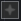

TouchDesigner and Python
A practical introduction to processing data and logic in TD using Python.
Setting up . Running a script: text . Triggering a script: panelexec . Encoding state: table and datexec . Reacting to signals: chopexec . Background actions: execute
Setting up
Our plan for this session is to get started with Python inside TouchDesigner.For a general intro to TouchDesigner, there are many [resources] you can tap. Being a visual environment, TD lends itself well to video tutorials. The usual caveat applies: take notes and replicate/expand on the material, don’t just passively consume it. We’re going to run Python scripts inside a text DAT, and then in various Execute DATs: panelexec, datexec, chopexec, and execute.
But first, let’s set up our work environment. In the Pane Layout panel under the menu bar  , switch to a vertical split layout, and set the right pane to
, switch to a vertical split layout, and set the right pane to Textport and DATs (Alt+9). This gives us a handy Python terminalaka a REPL to work with.
You can use this Textport to write your Python code, but I highly recommend going for an external [editor]. Select your editor of choice in Edit > Preferences > DATs > Text Editor. If you use VS Code, then also check out this autocomplete extension.
We’re now ready to make our first network. Double-click to create two Constant TOPs and a Select TOP. Hit P to edit parameters: make the Constant different colours, and have the Select refer to the constant1 TOP.
You can change the names constant1 etc to something more descriptive, or leave them as is. Think of this as a very abstracted boilerplate for a project comprising two different scenes, one of which is selected for output. Now let’s see how we can program this selection!
Running a script: text
The easiest way to try out a Python script in TD is to place it inside a Text DAT. Create one, edit it (Ctrl+E)As usual, this guide is Windows-centric. Mac users should replace Ctrl with Cmd. and save it with these contents:
print("HELLO WORLD")
Now, with the Text DAT selected, you can hit Ctrl+R to run the script. You should see the result in the right-hand Textport.
Let’s try now to change the contents of the select1 TOP. We want it to refer to the other colour. In select1’s parameter panel, click on + TOP to find out its Python name, which is top. Next, click on the Python Help... button to find out that you can access this parameter using dot notation, via the .par member.
We can then treat this parameter just as we would any Python variable, and assign it a different value:
op('select1').par.top = "constant2"
Voila! Run the text1 script and the colour is now different.
Exercise: change the Python code to toggle between "constant1" and "constant2" every time it is run. Hint: just as you modified the .par.top variable, you can read (and print()) its current value.
Triggering a script: panelexec
By now you may be tired of hitting Ctrl+R all the time. Why not use a nice button instead?
Create a Button COMP. It defaults to a toggle, but you can choose to make it momentary. Click its  Viewer Active toggle (low-right corner) to make it clickable.
To respond to these clicks, we need a new script: this time, inside a Panel Execute DAT. Before editing its contents, let’s set the parameters. Panels gets button1, and you need to turn on the relevant method (Off to On responds to mouse presses).
Another important parameter is Panel Value. It defaults to select, which simply reports mouse clicks, but you can change it to state to monitor the status of the button.
Finally, inside the onOffToOn() method we could re-implement our previous code, but since we already have it inside the text1 DAT, we can also just run it directly:
def onOffToOn(panelValue):
op('text1').run()
return
Exercise: use the panelValue parameter to choose between "constant1" and "constant2" depending on the state of the button.
Encoding state: table and datexec
Our system works pretty well, but what if we need to visibly store and access the system state, to and from various locations?In P5 etc we would use global variables for this purpose. Let’s try to change the architecture, centering it on a data structure that contains the state. We can then have two types of Execute scripts: ones triggered by the inputs (like the Button interface) which alter the state, and ones that respond to changes in the state and trigger output effects. The resulting framework will perform the same task, but allows for greater modularity and transparency.
The first thing we can do is use a Text DAT to hold the state data. Create one and rename it state. Then, in your input reaction script, you could modify the state contents:
...
op('state').text = "constant2"
You can then respond to changes in the state DAT using a DAT Execute DAT. As before, we first link its DATs field to our state DAT and activate the corresponding methods before editing the code:Depending on your needs, you should probably use onTableChange or onCellChange, and not both.
def onTableChange(dat):
print(dat.text)
return
def onCellChange(dat, cells, prev):
print(cells[0], "from", prev[0])
return
A more elegant solution than the raw Text DAT is to use a bespoke data structure, in the form of a Table DAT.
Table DAT encoding the system state.You can imagine such a table being used to store a series of global variables in a more complex system, whose changes could be monitored in the datexec:
def onCellChange(dat, cells, prev):
print("changed", cells[0].offset(0,-1), "to", cells[0], "from", prev[0])
return
Reacting to signals: chopexec
CHOPs in TouchDesigner deal with continuous signals;similarly to signals~ in Max & Pd. in the following we will use an LFO CHOP, but the general idea applies to all sorts of datastreams like audio, DMX, Kinect etc.
As was the case for Panels and Tables, we shall associate our LFO CHOP to a CHOP Execute DAT. By now you should be able to configure its parameters yourself. And modulating a parameter by the LFO value is again just a matter of accessing the appropriate .par:
def onValueChange(channel, sampleIndex, val, prev):
op('constant1').par.colorb = val # change B value
return
panelexec1 alters stateTable, which triggers datexec1 to reassign select1.Background actions: execute
We have seen so far how to trigger scripts manually, or have them react to interface input, or state changes, or continuous signals. Another option is the Execute DAT, which provides various methods: for example, you could have the equivalent of the P5 draw() function using the Frame Start method, which executes its contents every frame.
That’s it for now! It’s up to you to start plugging any kindOne subject that we did not touch here are Python external libraries, aka modules. See [this slide] for some starting points. of Python code into your TD networks and bring them to life. Of course this is just the beginning, and there are many [online resources] out there to help you build compelling interactive systems.